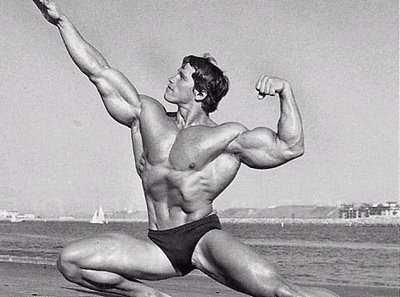
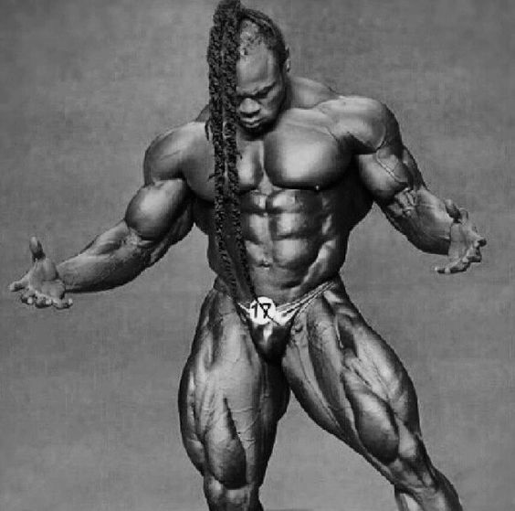
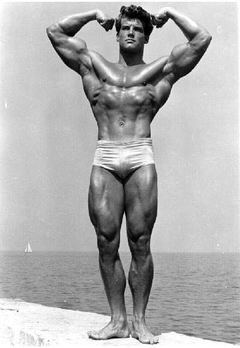

Muskelhypertrofi är kortfattat tillväxten av muskler.
Kroppsbyggare vilka tillhör den grupp av tränande människor som främst eftersträvar denna hypertrofi, tränar generellt sett med
mer måttliga vikter och ganska kort vila mellan seten vilket ger en hög metabolisk stress. Styrkelyftare fokuserar istället på att träna med tunga vikter och längre vila mellan intervallerna.
Vilken metod som ger optimal hypertrofi är dock oklart, eftersom både mekanisk spänning, metabolisk stress och små skador
i musklerna är faktorer som påverkar hypertrofin.
Här kommer bilder på några legendariska kroppsbyggare:


